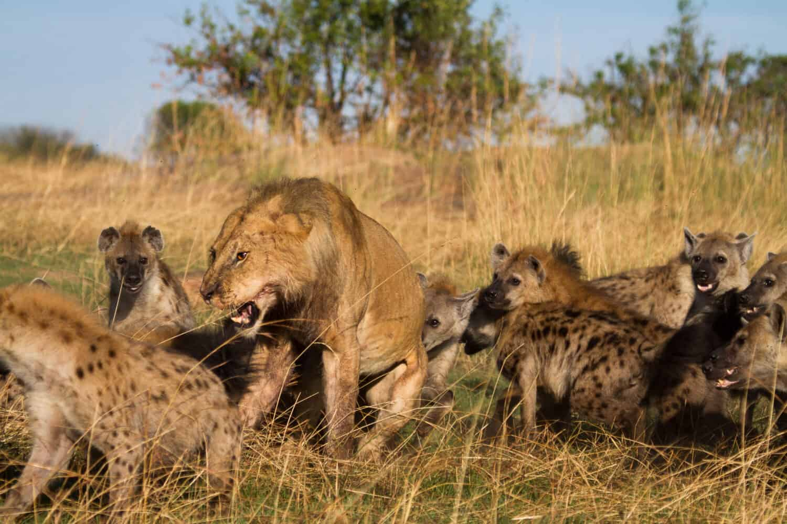
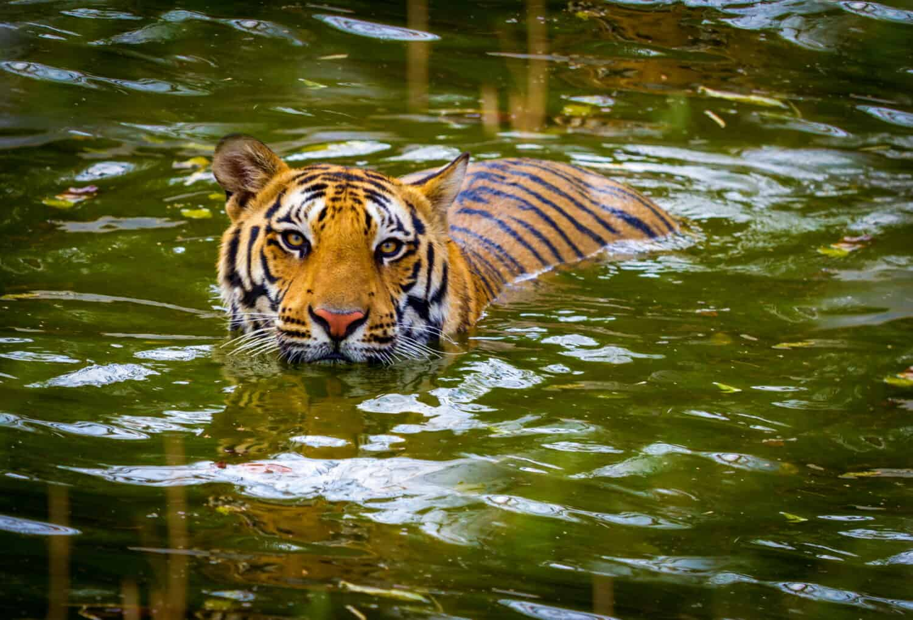
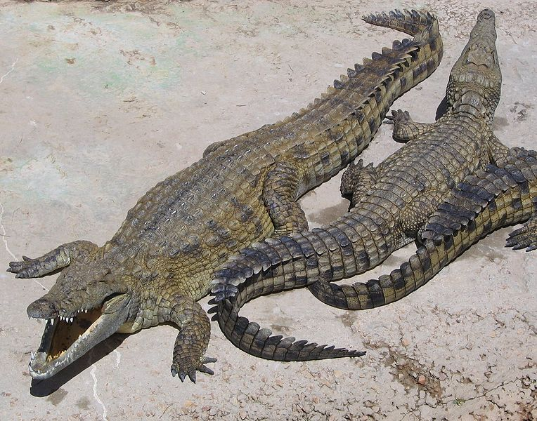
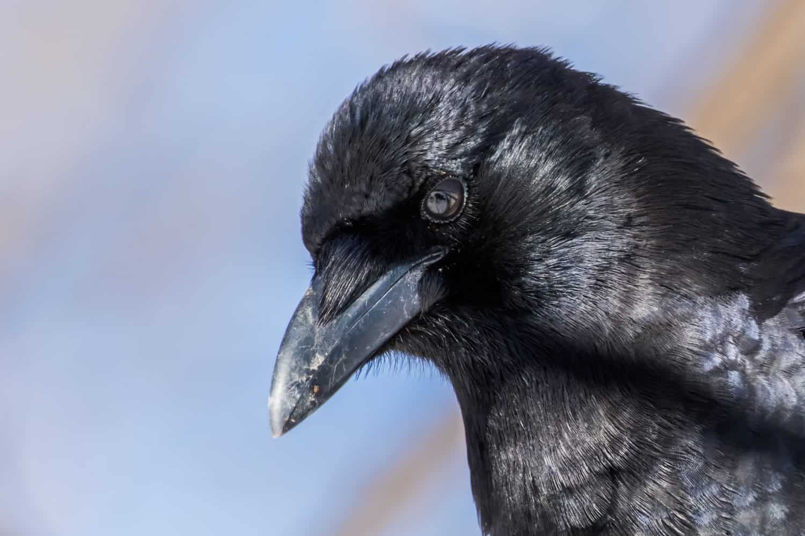
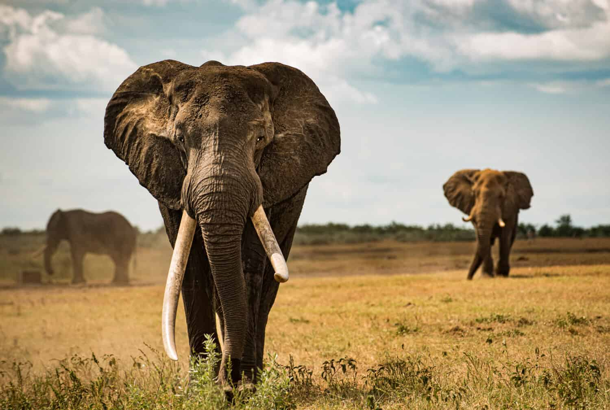
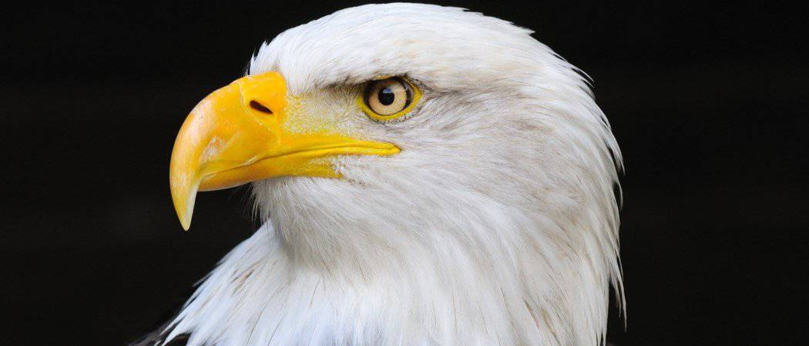

Lions are one of the most ferocious mammalian predators on land. Their large size, speed, and gymnast-like agility make them a force to be reckoned with in the wild. Not many other animals mess with these cats, who employ multiple hunting strategies in order to be successful predators.

Tigers are known for their majesty and strength. These big cats rightfully strike fear into the hearts of animals and humans that might encounter them. When it comes to comparing the strength of a tiger to that of a human, a tiger wins every time. In fact, they are one of the strongest creatures in the animal kingdom.

Quick Facts: Unlike other reptile species, crocodilians are archosaurs which is an ancient group of reptiles that also included dinosaurs. Crocodiles bask in the hot sun all day

Crows are best known for their solid black feathers and signature caw sound. These birds are omnivores, eating everything from insects to seeds. They are highly intelligent birds

These imposing creatures have long symbolized strength and wisdom. They have the power to crush with a single stomp, but their instincts are to protect their herd and eat plant materials. They are gentle but fierce when the moment calls for it. Their behaviors in the wild are fascinating but something happens when they are held in captivity. They start to display unusual behaviors. Discover why elephants sway back and forth! Plus, learn more about these creatures, including conservation efforts underway to protect them.

The sharp-eyed eagle is among the most fearsome predators of the animal kingdom. Nicknamed the “king of all birds,” eagles are large and powerful birds of prey that appear
ABCD
ABC
abcd
abc
abcd
abc